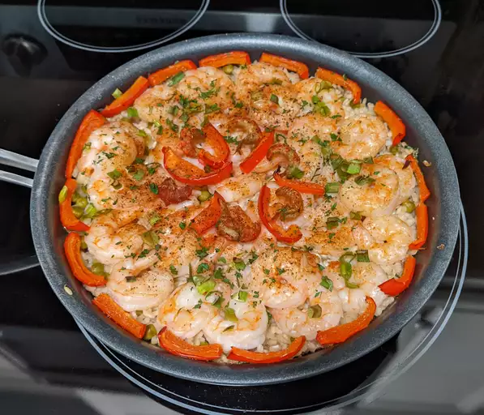

Paella

Description
Consider this a gateway paella and the first step to a serious, lifelong addiction.
When I first do a version of a classic dish like paella, I try to use a minimum number
of ingredients and steps to focus on technique. After learning the method, you'll
ideally use a wider variety of ingredients, like clams, mussels, squid, and chicken,
which will make your rice that much more interesting. Garnish with extra virgin olive
oil, freshly chopped flat-leaf parsley, and lemon wedges.
Ingredients
- 1 pound jumbo shrimp, peeled and deveined, shells reserved
- 2 teaspoons olive oil
- ½ teaspoon saffron threads, or more to taste
- 2 ¼ cups chicken broth
- 1 tablespoon olive oil
- 8 ounces chorizo sausage, sliced into thin rounds
- ½ yellow onion, diced
- 2 cloves garlic, minced
- 1 ⅓ cups Arborio rice
- ½ cup green peas
- 1 red bell pepper, cut into thin strips
- salt to taste
- 1 teaspoon paprika
- 1 pinch cayenne pepper, or more to taste
Steps
- Cook and stir reserved shrimp shells and 2 teaspoons olive oil in a saucepan over medium
heat until shells are pink and fragrant, 1 to 2 minutes. Stir saffron into shells; add chicken
broth, bring to a simmer, and cook until broth is a rusty brown and fragrant, about 20 minutes.
- Strain saffron broth through a fine-mesh sieve; measure out 2 cups of broth, pour into a small
saucepan, and place over low heat to keep broth hot.
- Preheat oven to 425 degrees F (220 degrees C).
- Heat 1 tablespoon olive oil in a large, oven-proof skillet over medium heat. Cook chorizo slices
in hot oil until browned, about 2 minutes per side. Add onion to sausage; cook and stir until soft
and slightly translucent, about 3 minutes. Reduce heat to medium-low.
- Stir garlic into chorizo mixture; cook and stir until fragrant, about 1 minute. Add rice to skillet
and stir to coat rice completely in oil; stir in peas.
- Pat rice mixture evenly into the bottom of the skillet. Arrange shrimp in a single layer over the
top of the rice. Lay pepper strips around and in between shrimp; season with salt, paprika, and cayenne pepper.
- Increase heat to high. When rice begins to sizzle in the skillet, pour reserved 2 cups hot saffron broth
over the shrimp; gently shake the skillet to distribute liquid.
- Bake rice mixture in the preheated oven until rice is almost tender and still a bit wet, about 20 minutes.
- Place skillet over medium-high and cook until rice is tender, liquid is absorbed, and rice caramelizes and
crusts slightly on the bottom of the skillet, 3 to 5 minutes.